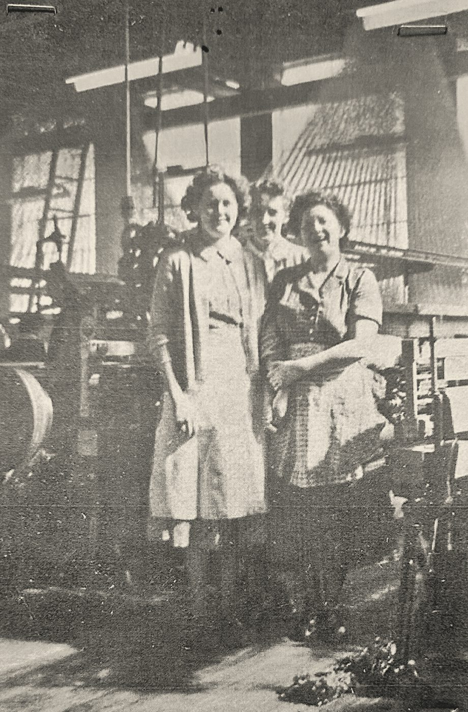
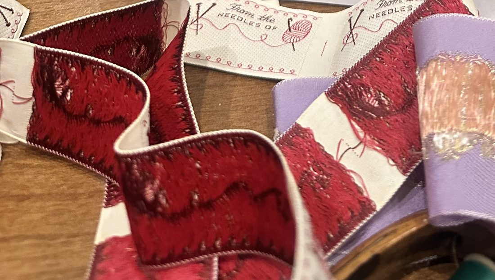
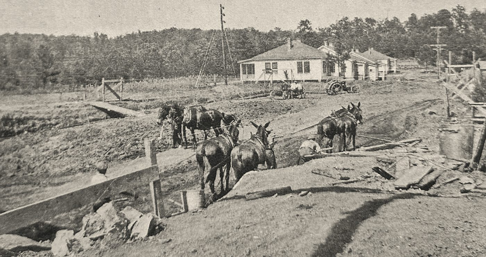
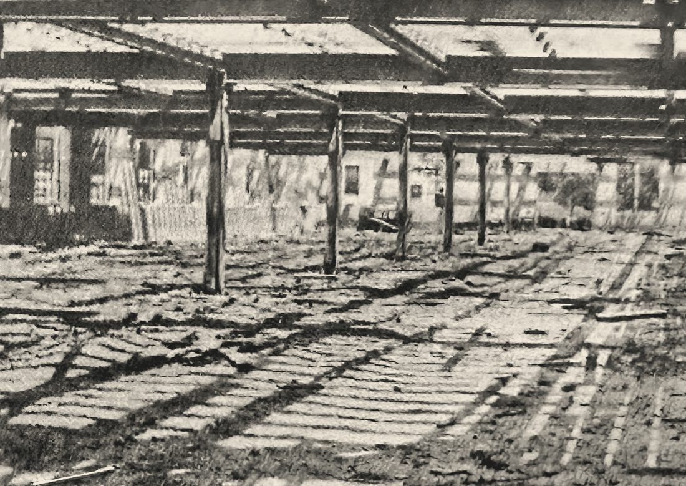
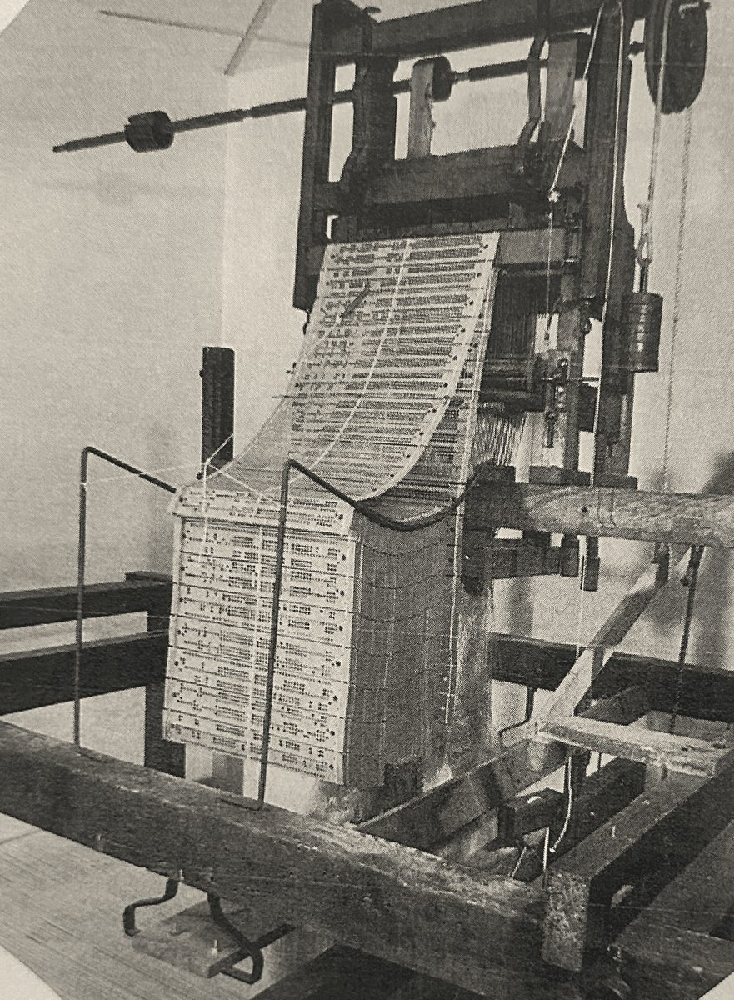
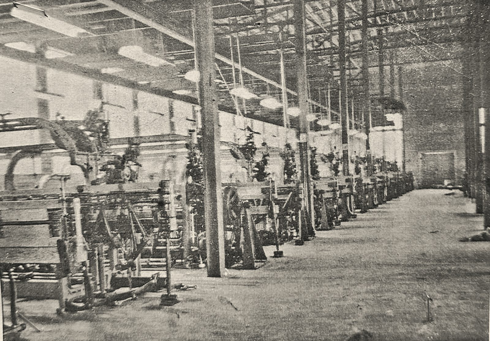
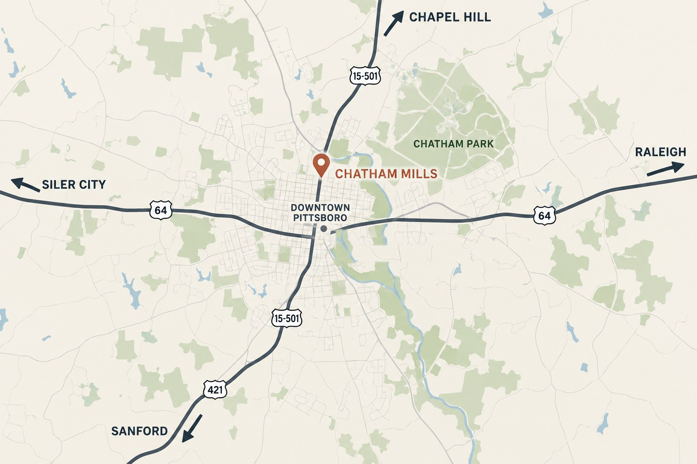

Rooted in history.
Built for what's next.
Chatham Mills opened in 1925 on the north side of Pittsboro, and for most of the century that followed, its looms were part of the town's daily rhythm. Since the looms went quiet, its brick buildings have filled with local shops, places to eat, studios, and services, and the mill has become an everyday stop for people across Chatham County.


Woven in Pittsboro.
In 1925, the Artistic Weaving Company began building a silk label mill on Hillsboro Street. The looms that arrived that fall could weave several ribbons of labels at once, in multiple colors, complete with lettering and figures.
Over the decades that followed, Chatham Mills grew into the largest plant of its kind in the world, with 180 Jacquard looms producing the woven labels stitched inside clothing across the country. Weaving continued here until 1997.
- 1925Construction begins on the silk label mill
- 1963Known as the largest woven label plant in the world
- 1997Weaving ends, and the buildings start a second life as shops and businesses
- TodayHome to local shops, food, studios, and services



The Mills Today
The old mill buildings have been home to local shops, studios, services, and places to eat for years. Stop in, look around, and meet the people behind them.
See All BusinessesMake Your Mark Here.
Join the established businesses that already call the mill home. Brick walls, factory windows, and nearly a century of history give every space real character, half a mile from downtown Pittsboro. Spaces open up from time to time, from small studios to larger storefronts.
-
OfficeWorkspace for teams and independent practices.
-
RetailStorefronts made for browsing and repeat visits.
-
CreativeStudios for makers, artists, and small production.
-
HospitalityRoom for food, drink, and gathering.
-
ServiceA steady home for the businesses neighbors rely on.

Leasing by BOLD Commercial Real Estate · 919-883-5502
In the
Heart of
Pittsboro.
Chatham Mills sits on about 32 acres along Hillsboro Street, roughly half a mile north of the courthouse circle in downtown Pittsboro. Downtown's shops and restaurants are an easy walk away, with Chatham Park and the rest of the Triangle a short drive beyond.
- 0.5 mi
- Downtown Pittsboro
- ≈32
- Acres
- ≈25 min
- Chapel Hill
- ≈45 min
- Raleigh
Pittsboro, NC 27312 Get Directions

More Than a Place to Work.
Upcoming at the Mills
The seasonal Chatham Mills Farmers' Market, private events at Forest Hall, social dances, and community gatherings fill the calendar all year.
See All Events